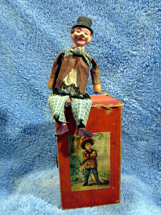
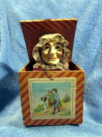
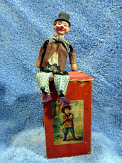
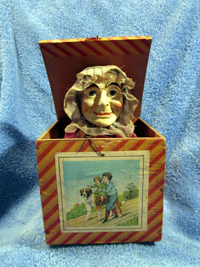

Surprise!
Jack in the Box
A variety of toys, games, and mechanical devices incorporate the term jack. The origin of the term is unknown. As early as the 1400s, Jack was used as a nickname for John and as a general term for a man of the common people. By the 1700s, references are found to sailors as jacks and individuals as a jack-of-all-trades. The term is also applied to mechanical devices that are substitutes for men, such as the jacks (mechanical figures) that strike (medieval clock) bells to indicate the time. Interestingly, it was Napoleon who redesigned playing cards to include a jack.
Rousseau alludes to the use of a jack-in-the-box as a means of alleviating a child’s groundless fears.1 So, we know that they existed as early as the 1700s. However, there aren’t, to the best of my knowledge, any examples in existence from that period.
Or, perhaps, I’m simply assuming that the reference is to a toy of the form we’re accustomed to rather than another toy. Jumping jack toys, for example, have a rich European history whose antecedents (string animated toys) stretch to the 20th century B.C.2.
I believe that the jack-in-the-box, as we know it, was an American invention, introduced in the early 1800’s, rapidly commercialized, and eventually exploited by European, principally German, toy manufacturers. That’s based upon a chronology of their development that corresponds to their construction (and that of related toys) and the limited documentation available. Jack-in-the-boxes can be dated by their:
- * Size. The early jack in the boxes are small and the boxes, themselves, often crudely jointed. Over time, the boxes grew larger (and manufacturers introduced different sizes of the same character at different price points). In Picture 1, the smallest box is dove-tailed, the middle-one nailed, and the largest glued together. Their size, and the width of the wood, are typical of early jack in the boxes. Later jack in the boxes (Pictures 3 thru 9) are larger, have thin wood sides, and are glued together.
- * Head. Early jack-in-the-boxes face upwards (see Picture 1); their “heads” are actually half-heads or faces simply glued to the top of the spring. The early faces are papier mache or gesso on wood (Picture 2). Later, full heads were introduced (Pictures 4 thru 9). They were constructed of papier mache, plaster of paris, and bisque / porcelain (including the use of marked doll heads).
- * Clothing. The early half faces weren’t “dressed.” The springs were bare or covered by paper. Over time, paper covers gave way to elaborate cloth costumes and, later still, crepe paper gowns.
- * Latches and hinges. Initially, the latch was a bent wire. Hooks were introduced as early as 1880; however, they co-existed with bent wires through the 1930s. (I don’t have any evidence that more elaborate locking mechanisms were used prior to the 1930s.) Early hinges are made of twisted wire. For a period, they co-existed with cloth hinges (a cheesecloth like material); however, by 1900 (if not earlier) only cloth hinges were being used.
* Decoration of the box. Plain boxes gave way to paper covered boxes and, later, boxes with "decals" affixed to the front. I believe that the introduction of “decals”, actually chromolithograph paper pictures, corresponds to the collection of tradecards and the Victorian Era scrapbook fad. That said, note that the middle-sized jack in the box shown in Picture 1, an early one, has a paper chromolithograph picture of a girl on the front. While probably added after its manufacture, we’ll never know.
The early jacks in the boxes shown in Picture 1 are half faces (and, for that reason, the picture was shot downwards). The faces, while crude, are clearly formed in molds (probably similar to early cookie boards). Pictures 2 and 3 illustrate “transitional” jack-in-the-boxes. Those in Picture 2 are also very early half faces. Unlike their predecessors, their faces look outwards, they’re “dressed” and have wood hands. Their faces are painted gesso on thin, oval / flat wood “heads” that are affixed to the cloth covered spring. Later half heads, such as those in Picture 3, are more elaborate and more like what we perceive jack in the boxes to be. It’s likely that manufacture of the later half faces overlapped production of those with full heads. Both types are found with decals on the front of the box. By 1900, however, only full heads were being produced.
Before 1850, the “jacks” were non-descript, un-identifiable people. Then, during the 1860s / 1870s, identifiable characters were introduced: animals, clowns, comic characters, holiday (Christmas and Halloween), and political. The cats and dog [a hunting dog - he wears a green hat with a feather] shown in Picture 4 and clowns shown in Picture 5 are typical. The "doubles" (Picture 6) evolved from early half face “Punch and Judy” like jacks to full head father and mother figures (ca. 1875-1900). The political ones shown in Picture 7 are relatively rare. They were manufactured during the 1910-1920 period.
The “golden age,” so to speak, of jack-in-the-boxes was the period 1870-1910. It’s during this period that, in my opinion, they reached the height of their popularity. (By the 1920s, German toy makers seem to have abandoned the market. And Japanese toy makers entered the market with jack-in-the-boxes that were, quite frankly, rather poorly made.) In 1872, T. Lobricon won the prestigious xxx with a painting entitled The Surprise [Picture 9]. The image was widely reproduced in advertisements. Thomas Nast, the political cartoonist, preferred to show jack-in-the-boxes scaring children, an intriguing interpretation of their popularity [Picture 10].
During this time, the German toy manufacturers were quick to capitalize on popular themes of their day. They broadened the variety of (and corresponding market for) jack-in-the-boxes and introduced the decals which I associate with the Victorian era (trade cards, scrapbooks). Picture 7 shows three versions / interpretations of Foxy Grandpa, a cartoon character introduced in 1908. Because none of the identifiable characters have half faces, it’s safe to assert that all half faces are pre-1900. (Nevertheless, it’s clear they co-existed during the Victorian era.)
Picture 7, featuring a rather unhappy Brownie in jail and the cop that napped him (ca. 1910-1920), illustrates another aspect of jack in the boxes. Not all jack in the boxes are square with jacks that pop up. For example, the political ones shown in Picture 8 - a caricature of Uncle Sam (ca. 1876) and a suffragette (ca 1910) - were designed to resemble pencil boxes. Several in my collection are labeled Dominoes and a rather rare one resembles a photo album.
German toy makers did, in fact, manufacturer jack-in-the-boxes. I have duplicates in my collection, including different sizes of the same character (“jack”). And, while we don’t know who the manufacturers were, they can be identified. Notice the similarity of the clowns facial characteristics and paint (Picture 5). Other manufacturers used only one “style” of paper to cover the boxes. Each seemingly had their own “signature.”
I believe, as I mentioned, that jack-in-the-boxes are an American invention (despite Rousseau’s comment). That conclusion is based upon (a) the discovery of early half-face jack-in-the-boxes in the US and not elsewhere; (b) the contemporary development of other toys in the US and later shift of their manufacture to Europe, e.g., dolls, trains, etc., as cottage industries were replaced by relatively large scale manufacturing.
.Unfortunately, though, we don’t know. So, we’ll have to settle for the enjoyment of being surprised by our discoveries - and, of course, the jack-in-the-boxes themselves.
 
FOOTER
1 See Rousseau, Jean-Jacques, Emile or On Education, trans. Allan Bloom (New York: Basic Books, Inc., 1979), p. 63 and p. 137.
2 Weiss, Harry B., Something About Jumping Jacks and The Jack-In-The-Box (Ann Arbor, Michigan: Edwards brothers, Inc., 1945), p. 1.